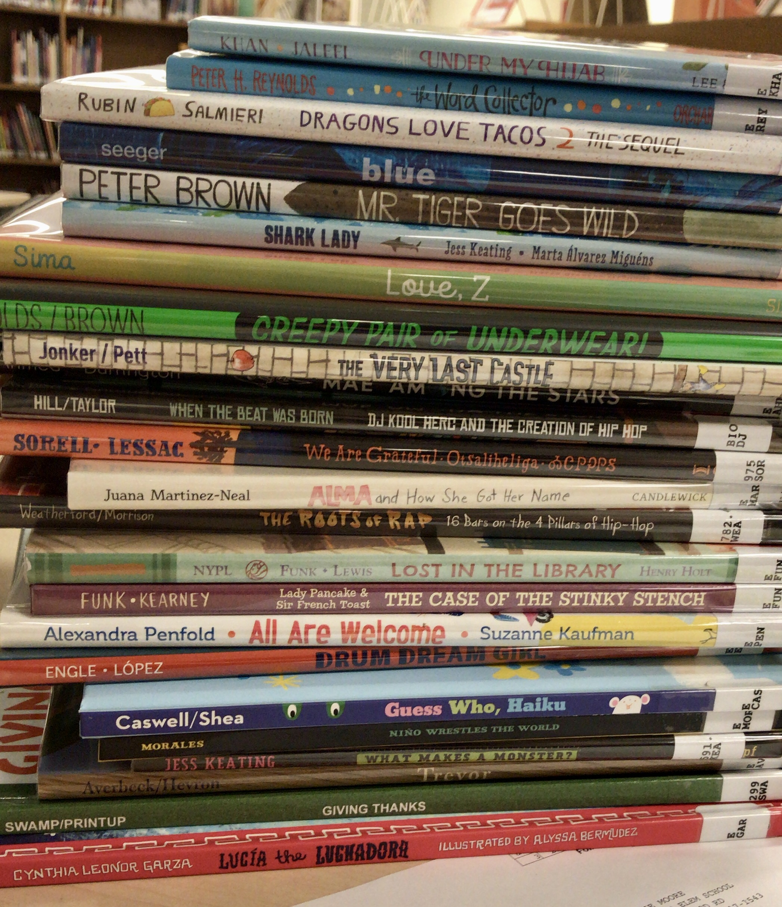

About
Work
Connect
Work & Projects
Completed Projects
Book Grants
Collection Update
Library Update
Library Lessons
Mock Caldecott
Circle Under Berry
Duncan Tonathui Illustrator Study
Wayne State University SIS Portfolio